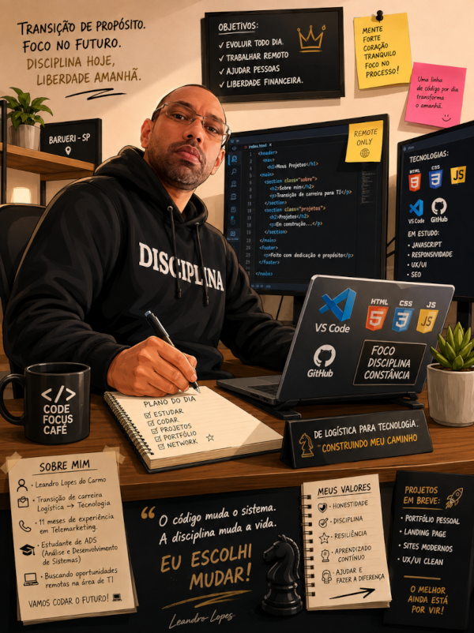

Sobre mim
Perfil profissional - minha trajetória

Perfil profissional — minha trajetória.
Sou Leandro Lopes, estudante de Análise e Desenvolvimento de Sistemas e desenvolvedor Front-end em formação. Atualmente, estou direcionando minha carreira para a área de tecnologia, com foco no desenvolvimento de interfaces responsivas, modernas e funcionais utilizando HTML, CSS e JavaScript. Antes de iniciar minha trajetória em tecnologia, construí minha experiência profissional principalmente na área de logística, atuando em atividades de recebimento, separação, organização, expedição e carregamento de mercadorias. Também tive experiência com atendimento ao cliente na área de telemarketing. Minha experiência profissional me proporcionou contato direto com rotinas que exigem organização, responsabilidade, atenção aos detalhes, trabalho em equipe e cumprimento de prazos. Estou em constante aprendizado e busco transformar meus conhecimentos em projetos práticos, desenvolvendo minhas habilidades em Front-end, lógica de programação, Git e GitHub, além de continuar estudando UX/UI Design e inglês.
Disponível para oportunidades freelancer e estágio
Endereço: São Paulo, Brasil
Idiomas: Português (Brasil), Inglês básico
Telefone: +55 (11) 96366-4840
Email: leandrolopesdocarmo82@gmail.com